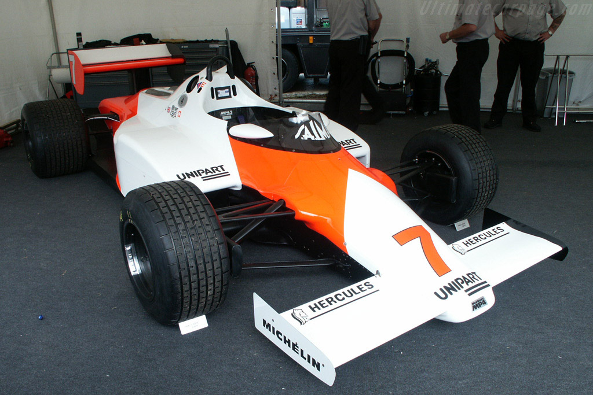

Galéria
1983 as autó
Az első igazán jó McLaren autó
Az utolsó siker
Ricciardo győzelme Monzában, mikor a csapat 12 év után tudott egy 1-2 eredményt szerezni.

Hamilton 2008-as autója
Az utolsó kanyaros vb cím
Hamilton előzése Timo Glock ellen.

Az 1981-es autó
A legenda Alain Prost

Az első narancs McLaren 1987 óta
2017-ben
Az utolsó autó a korszakváltás elött, 2006-ban
Az autóban Heiki Kovaleinen.
Az 1977-es autó
A 2001-es Häkkinen féle autó
Senna világbajnok autója
1988-ban
Ricciardo híres ünneplési szokása
A shoey